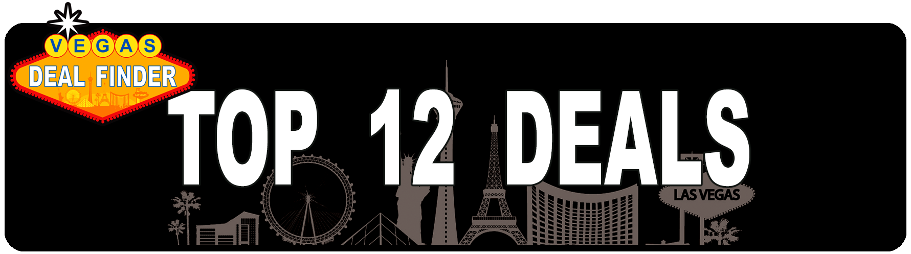
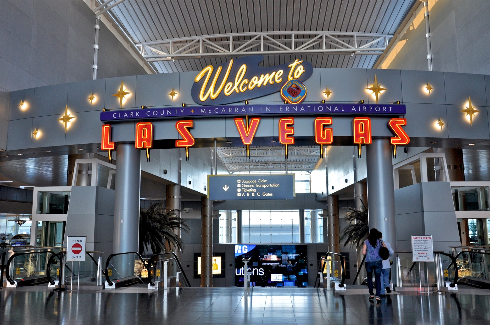
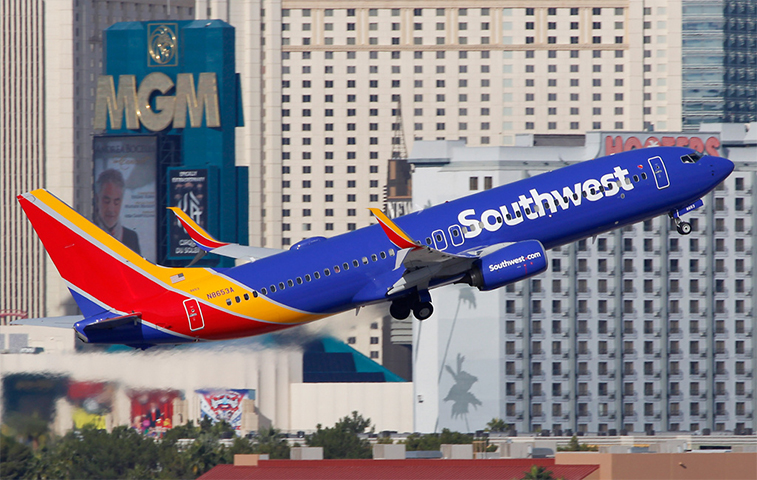
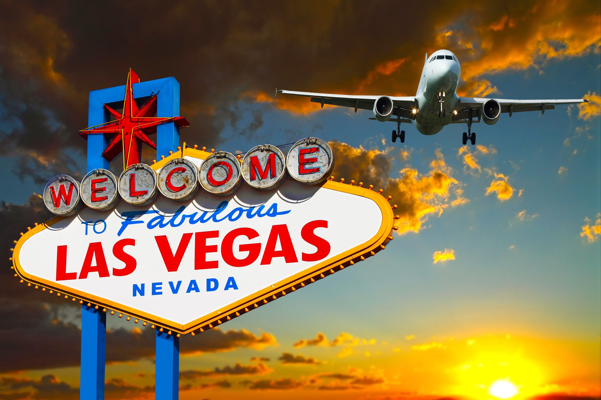
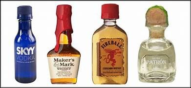

<template>
  <div class="MainContainer">
    <div class="TitleImg center">
      
    </div>

    <div class="TitleImg center">
      
    </div>
    <div class="center">
      <h2>AIRFARE TIPS & DEALS</h2>
    </div>
    <div class="triple-wide">
      <div class="first-container">
        <h4>PRO TIP: Getting from the airport to your hotel</h4>
        <p>With so much excitement and energy where arriving in Vegas it can be easy to just jump in a cab and head to your hotel. But that's actually the worst option for transportation. For only $2 you can ride the WAX bus (depending on my departure point – more on this further down). As per the shuttles, which are frequent and operate through the night, they still provide a great & affordable option if you traveled solo or with just one other person; if I travel in group of 4 or 5 people a large Uber may be a cheaper option.  Besides the WAX bus, for one or two people the shuttle provides an affordable alternative to the ever-increasing taxi fares (with ever-increasing starting fixed rate, which is simply a rip-off – and of course the expectation of a large tip, not sure why to this date, unlike pretty much any other cab service in the rest of the world). These shuttles will take you to any main resort, even off the Strip, and they are very important for those not wanting to be ripped off by taxis the second they arrive in Las Vegas. Don't ride in taxis ever when in Vegas. </p>
        
        <h4>SIGHT SEEING! TAKE LOTS OF PIC'S!</h4>
        <p>Vegas was built with the hard earned money of its visitors. It stunning & impressive architecture leaves endless opportunities for great pictures.  Make memories while in Vegas with pictures. Put the phone to some additional use and gather the crew for some of the best pictures. Visit Binions Casino on Fremont St for a Free picture with a million Dollars. </p>
      </div>
      <div class="second-container">
        <h4>TIPS FOR FINDING THE CHEAPEST FLIGHTS TO LAS VEGAS</h4>
        <p>When flying to Las Vegas you will most likely be flying to McCarran International Airport (LAS). When you land, you're only 10 minutes away from The Strip.</p>
        <p>Because Las Vegas is the 19th busiest airport in the world, it's served by many domestic and international carriers. There can be more price competition which means flying to Vegas can be more affordable than other less-traveled destinations.</p>
        <p>
            How much you pay for your flight depends on several factors:
            <li>Flying distance</li>
            <li>Airline </li>
            <li>Your travel dates </li>
            Short-Haul Flights Are Almost Always Cheaper
        </p>
        <p>Obviously, flying from faraway destinations are going to be more expensive than if you fly from California. This isn't always true, but you can usually find roundtrip flights for $150 or less from the U.S. west coast compared to $250 from the East Coast. </p>
        <p>You might consider using your frequent flyer miles for cross-country flights as you can get more value from each point. </p>
        

        <h4>Fly Discount Airlines </h4>
        <p>What airline you fly also makes a difference. Going with a "no frills" discount airline is almost always going to be your cheapest option compared to flying one of the major carriers. But, don't forget to factor in your carry-on and checked bags into the final price if you fly on a discount airline. The lowest rate usually only lets you grab a seat and bring a small personal item onboard. </p>
        <h4>Check Your Travel Dates </h4>
        <p>Some days of the week are more expensive to fly than others. The flight search engines like Google Flights and Momondo make it easy to quickly spot the price trends. If you have some flexibility with your travel days, use the travel search engine price graphs to quickly book the same route for less. </p>
        <h4>Avoid the Summer Months </h4>
        <p>If you don't have a preference when you go to Vegas, the cheapest months to fly are typically January and February. You'll escape the brutal summer heat where the average daily high is above 100 degrees and you'll avoid the most expensive flights to Las Vegas. </p>
        <h4>The Cheapest Airlines to Las Vegas </h4>
        <p>The best airline may boil down to where you're flying from. If you live near a hub for one of these airlines, you're in luck! </p>
        <h5>Southwest Airlines </h5>
        <p>Southwest Airlines has a large hub in Terminal 1 of McCarran Airport. Maybe you've even connected through Vegas on a prior Southwest flight. There are multiple flight options and you can save some cash as your first two checked bags fly free!Southwest Airlines is also a Chase Ultimate Rewards transfer partner. If you own a Sapphire product or a Chase business credit card, you can transfer your points on a 1:1 basis for your business or personal travel. </p>
        <h5>JetBlue </h5>
        <p>JetBlue can be a better option if you're looking for a discount airline from the U.S. East Coast. But you shouldn't neglect their West Coast routes either from Seattle, San Francisco, or Long Beach. You can find fares for $40 per person on JetBlue in their "Blue" class. You can bring on one carry-on and personal item for free, but you will have to pay for each checked bag. Additional in-cabin perks can also include free snacks and beverage and free Fly-Fi internet. Don't forget that JetBlue is also a transfer partner for the American Express Membership Rewards points. </p>
        <h5>Frontier Airlines </h5>
        <p>It's very common to find bargain-priced flights to Las Vegas on Frontier Airlines. One of the travel sweet spots is non-stop service from San Jose, CA. You can get a roundtrip flight for only $77. The only catch is that your carry-on bag costs $30 each way ($60 roundtrip) and checked bags cost $25 each way. </p>
        <h5>Allegiant Air </h5>
        <p>If you can't fly JetBlue or Southwest, Allegiant is another popular discount airline to consider. The service quality is still along the same lines as Frontier Airlines. Carry-on bags cost approximately $20 to bring onboard and a checked bag costs $45. Allegiant can still be a viable option if it's cheaper to fly than a major U.S. carrier. </p>
        <h5>Alaska Airlines </h5>
        <p>From the U.S. West Coast, you can also see if Alaska Airlines has any discount seats available. A one-way flight costs between $45 and $89 depending on the departure city. As even some of the discount airlines can charge more than $100 for a flight from the same departure city, it's worth price shopping. With these fares, you're allowed one carry-on bag. Your first and second checked bags cost $25 each. </p>
        <h5>Flying with a Major Carrier </h5>
        <p>You can also fly American, Delta, or United to Las Vegas. Their fare prices are typically more than the discount carriers, but you can still find affordable options. To avoid paying cash, you might decide to redeem your frequent flyer miles. </p>
        <p>On American, flights shorter than 500 miles cost 7,500 miles each way. Longer flights in economy cost 12,500 miles each way. </p>
        <p>United award flights start at 10,000 miles for flights 700 miles or less and cost 12,500 miles for long-haul domestic flights. </p>
        <p>Delta award flights use a variable price pricing model, but you can begin redeeming Delta SkyMiles for 5,000 miles for short haul flights. If you want to pay with points, Delta might be the most economical option for you. </p>
        <h5>Summary on Finding Flights to Las Vegas </h5>
        <p>The cheapest flights to Las Vegas are almost always going to originate from the U.S. West Coast on a discount airline. But, you can still find bargains with any airline if you compare prices online regardless of your departure city. Because so many airlines fly to Las Vegas, finding a bargain can be easier than you think. </p>
        <h4>Plan Your Trip today with our help at VDF!</h4>
        <p>Start planning today with our help. Make sure to checkout the VDF Sections for Gambling, Food/Drink, Hotels and of course gambling.  </p>
        

      </div>
      <div class="third-container">
        <h4>Don't overpack:</h4> <a href="#" class="textLink">Click here for some great tips for packing for Vegas</a>
        <h4>PRO TIP:</h4> <span>Save some money by bringing snacks with you for travel and while on vacation. Save some money by bringing snacks with you for travel and while on vacation. Here are some easy snacks to bring through security. Do not bring liquids.</span>
        <h4>GREAT SNACKS TO PACK</h4>
        <ol>
          <li>Sandwiches – (wrapped)</li>
          <li>Fruit – (Bananas, Apples, Oranges, etc.)</li>
          <li>Firm Cheese – (wrapped)</li>
          <li>Pretzels</li>
          <li>Cookies</li>
          <li>Pastries</li>
          <li>Gum</li>
          <li>Chips</li>
        </ol>
        <h4>First time to Vegas?</h4>
        <p>Spending some time planning out all the stuff you want to do in Las Vegas will be helpful once you arrive. With so much going on it can be tough to decide what to do and when. Draw up a basic plan for your vacation. Allow yourself to be flexible but this gives you a great map to make sure you see everything you want to. </p>
        <h4>Can you travel with Alcohol?</h4>
        <p>Alcohol is looked on no differently then other liquids. They must be is a 3.2oz size or smaller. So bringing a nice selection of your favorite Airplane bottle sized cocktails is a great way to save money. I like Baileys for my coffee, JD for my coke and Tequila for when the party starts! I mean this is Vegas!!</p>
        
      </div>
    </div>
  </div>
</template>
